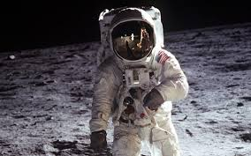
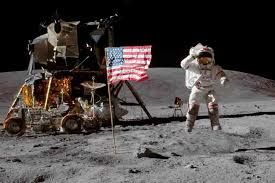
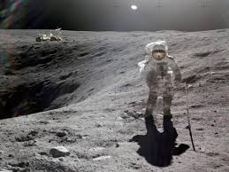
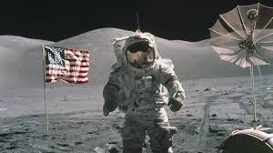
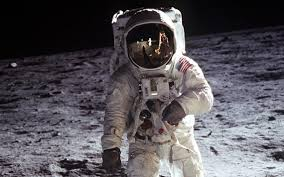
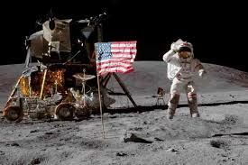
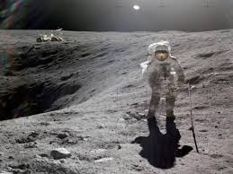
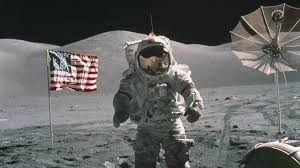

Nunca en toda su historia los hombres han podido concebir verdaderamente el mundo como uno: una sola esfera, un globo, que tiene las cualidades de un globo, una tierra redonda en la que todas las direcciones finalmente se encuentran, en la que no hay centro porque cada punto, o ninguno, es el centro, una tierra igual que todos los hombres ocupan como iguales. La tierra del aviador, si la hacen los hombres libres, será verdaderamente redonda: un globo en la práctica, no en teoría.
La ciencia tiene dos caminos, por supuesto; sus productos pueden utilizarse tanto para el bien como para el mal. Pero no hay vuelta atrás de la ciencia. Las primeras advertencias sobre peligros tecnológicos también provienen de la ciencia.
Lo más significativo del viaje lunar no fue que el hombre pusiera un pie en la Luna, sino que pusiera el ojo en la tierra..
GALERIA
 







LA FRONTERA FINAL
No se puede pensar en terminar por "apuntar a las estrellas". Tanto en sentido figurado como literalmente, es una tarea que ocupa las generaciones. Y no importa cuánto avance uno, siempre existe la emoción de comenzar.
Los sueños de ayer son las esperanzas de hoy y la realidad de mañana. La ciencia aún no domina la profecía. Predecimos demasiado para el próximo año y, sin embargo, demasiado poco para los próximos diez.
Los vuelos espaciales no se pueden detener. Este no es el trabajo de un solo hombre, ni siquiera de un grupo de hombres. Es un proceso histórico que la humanidad está llevando a cabo de acuerdo con las leyes naturales del desarrollo humano.